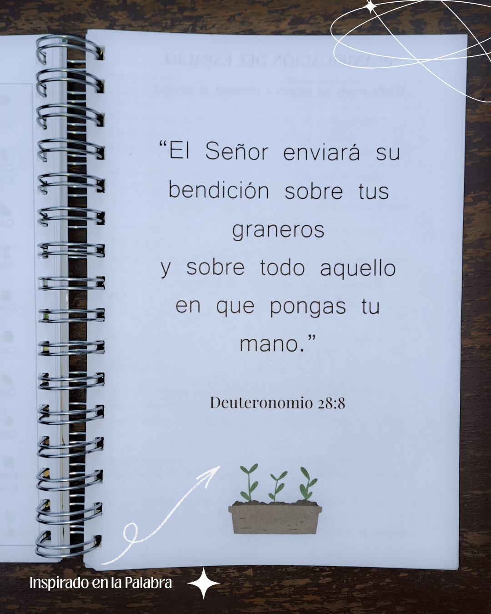
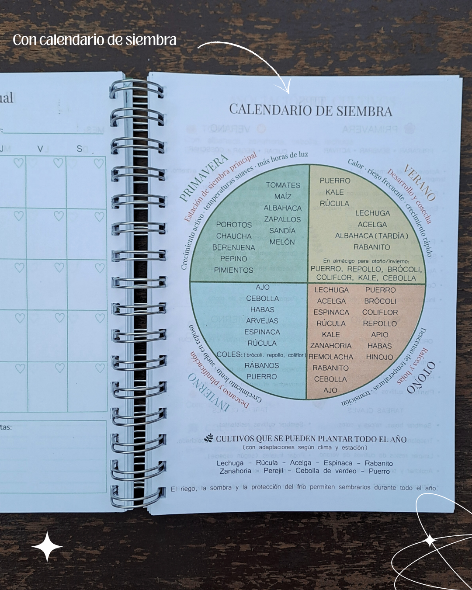
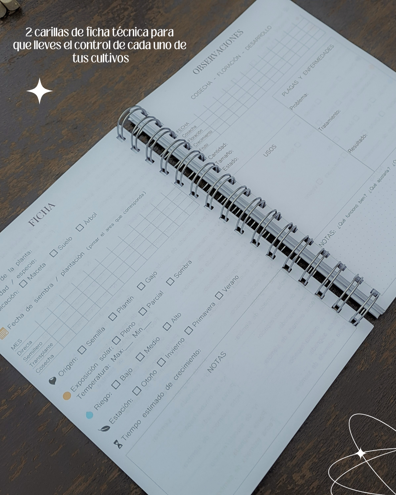
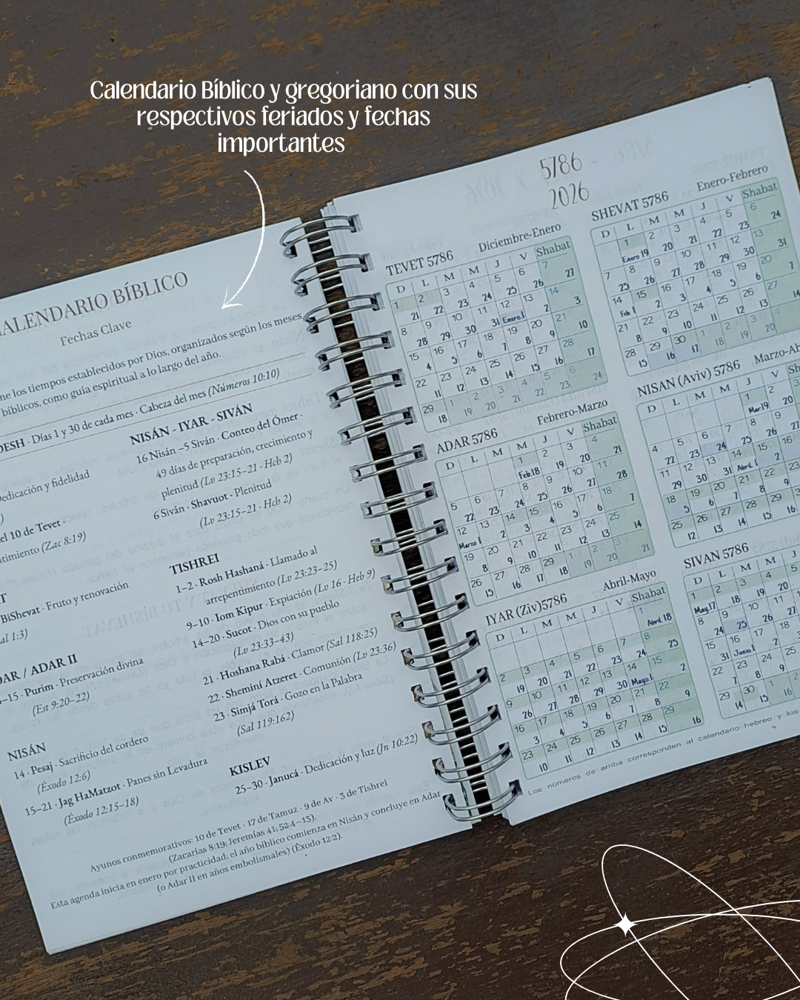
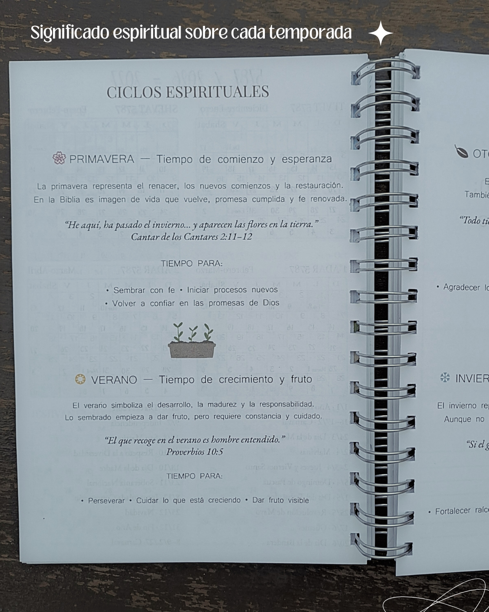
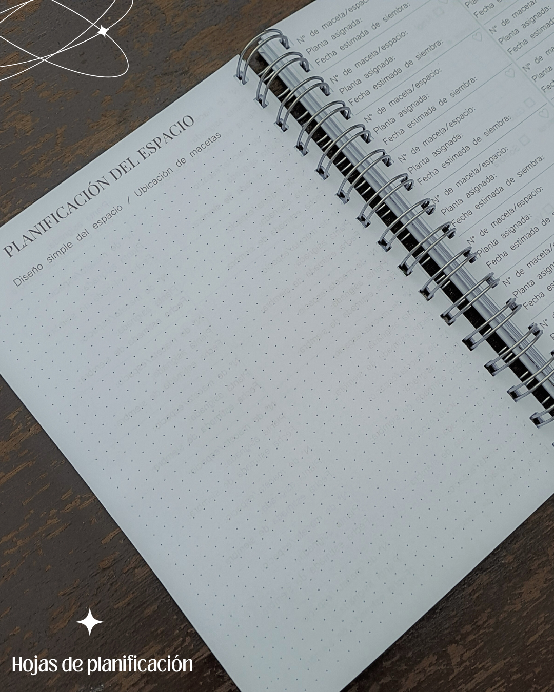
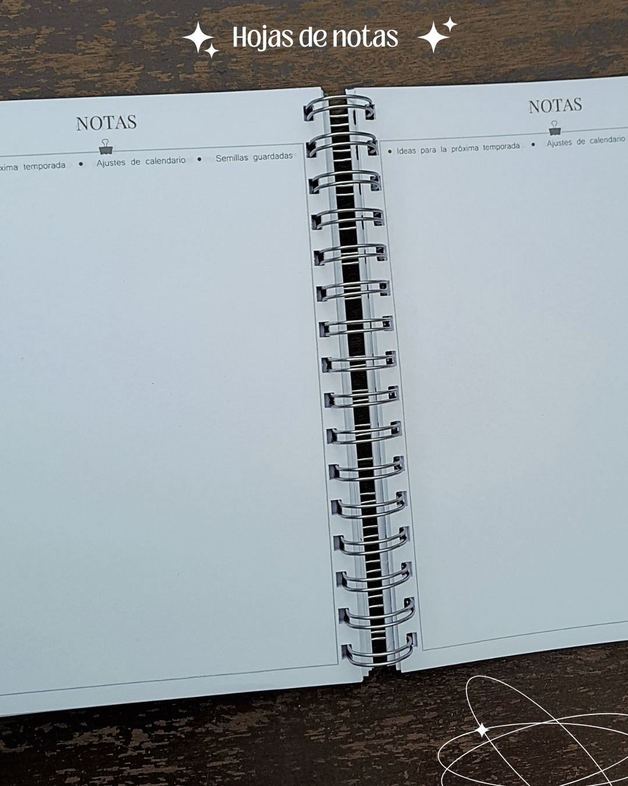

Agenda Gan
$ 12.000

La Agenda GAN nace del significado bíblico de gan (גַּן): huerto, jardín cuidado y lleno de vida.

Incluye versiculos y propósito inicial para comenzar el año con intención y preguntas clave para no perder el norte.

Planner mensual pensado para organizar tu ritmo de vida de forma consciente y Calendario de siembra y asociación de cultivos: la tierra como maestra.

Fichas individuales para tus plantas, espacio para seguimiento y observaciones personales.

Calendario bíblico y gregoriano, integrando tiempos sagrados y cotidianos.

Ciclos espirituales basados en las escrituras para acompañar tu reflexión diaria.

Hojas de planificación para que siempre sepas y reconozcas cada plantación.

Notas finales, sobre y stickers… un espacio de cultivo donde la fe y la tierra se encuentran.
“Y tomó el Señor Dios al hombre y lo puso en el huerto (gan) de Edén, para que lo labrara y lo guardase.” — Génesis 2:15
Agregar al carrito